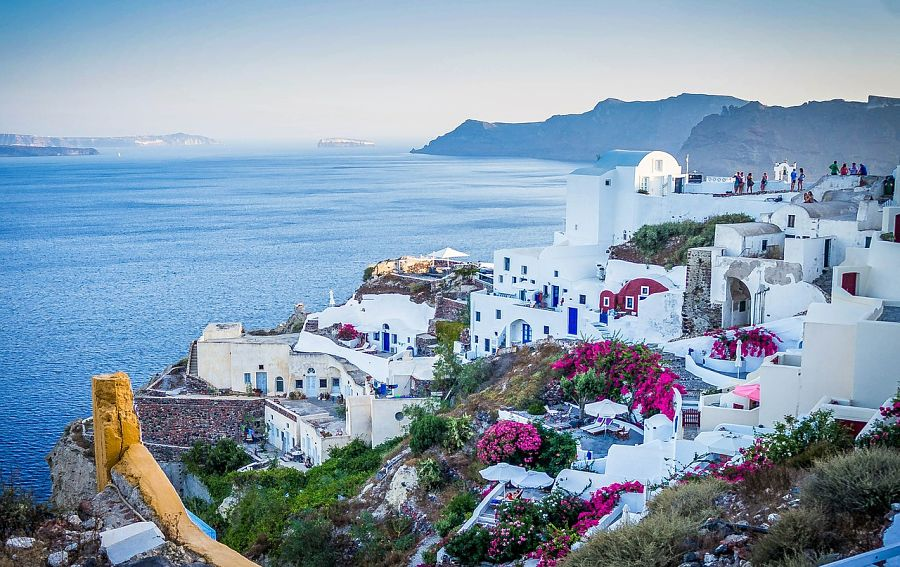

Греція
Греція – країна, яка знаходиться в Південній Європі. Площа Греції – 131 957 км². Сучасна Греція вважається колискою західної цивілізації, батьківщиною світової демократії, західної філософії, основних принципів фізико-математичних наук, мистецтва театру та Олімпійських ігор сучасності. На основі грецької абетки виникли латиниця та кирилиця.
Санторіні
Ймовірно, одне з найвідоміших місць для відвідування в Греції, Санторіні – алмаз Егейського моря. Тисячі туристів притягуються до краси цього острова щороку і залишають, знаючи, що ніде більше так як тут.Це вражаюче красиве місце є одним з найбільш мальовничих у всіх грецьких островах. Мальовничий і всесвітньо відомий, Санторіні треба бачити, щоб повірити. Зануртеся в бірюзові води, пройдіться навколо прекрасних сіл і повечеряйте в прекрасних ресторанах, Санторіні вкраде ваше серце.Від своїх вулканічних пляжів і побілених будинків до його неймовірних заходів і пейзажів, Санторіні, безумовно, є одним з кращих місць в Греції. Докладніше.
Афіни — одне з найцікавіших для відвідування місць у світі. Столиця Греції, названа на честь богині війни й мудрості Афіни, не схожа на жодне інше місто. Тут зібрана неймовірна кількість старовинних пам’яток, серед яких Акрополь, Римська агора, Театр Діоніса, Храм Зевса Олімпійського, і багато інших. В Афінах можна не тільки познайомитися з історією й культурою Греції, але й чудово провести час, адже це сучасний мегаполіс із безліччю бутиків, вишуканих ресторанів і нічних клубів.Докладніше.